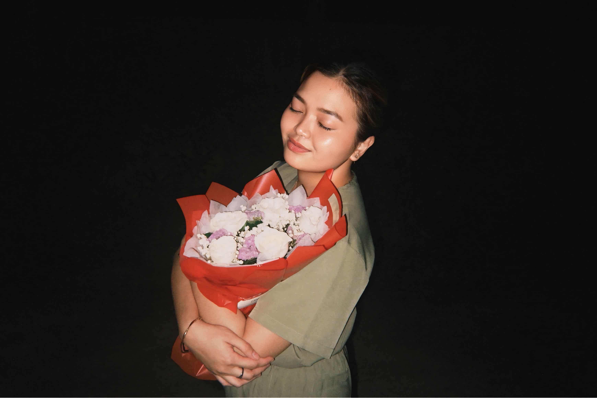
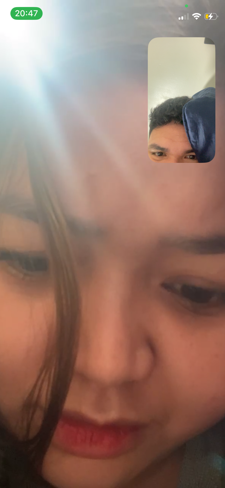

Our first Valentine's day as a couple. Although far from each other. Still won't stop us from celebrating this special day. I know we’re miles apart, but I wanted to make something just for you. Something small that says what I don’t always get to say.
Eight months ago, I had the privilege to talk to a supermodel, sweet, talkative and soft spoken person. I didn't want to waste that opportunity to be close to yo. The opportunity that you have provided. I didn’t know how important you’d become to me. Now you’re part of my everyday. My favorite messages, my best calls, the person I think about more than I probably admit.
We started our relationship with the distance, and we stayed. We show up for each other, even from far away. Long distance isn’t always easy, but you make it feel worth it. I will never regret choosing you. I will never get tired of you. Not to you, the perfect and most beautiful person in the world.
Hey love:
I'm sorry for the moments when my worries spoke louder than my heart.
For the times I wasn't as gentle, as patient, or as present as you deserved.
I know I overthink, I know I get lost in my storms but please never doubt this:
you matter to me more than anything I've ever tried to put into words.
Thank you for staying, for trying, for understanding me even when I make it hard.
I'm working on myself every day not to be perfect, but to be someone who loves you they you've always deserved.
Because having you in my life isn't just special it's the part of my world I never want to take for granted.
Click below for your special note: